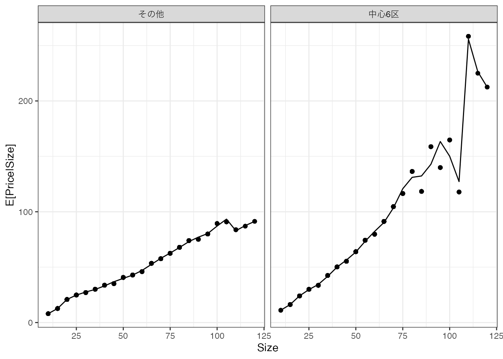

3 データ上でのOLS
少数事例の要約を避けるためには、より”大雑把な”要約が必要となります。 大雑把な要約の代表例として、線型モデルを紹介します。
線型モデルは、手元のデータから\(Y\)の平均値が持つ性質を簡便に捉えるモデルであり、現代のデータ分析でも頻繁に利用されます。
線型モデルを推定する方法としては、本章で最小二乗法(OLS)および@sec-LASSO でLASSOを紹介します。
OLSによる推定は、研究者によるモデルの単純化が求められます。 適切な単純化がなされるのであれば、限られた事例数のもとでも、母平均の特徴を類推する有効な方法となり得ます (Chapter 4)。
3.1 線型モデル
\(Y\) の平均値と \(X_1,..,X_L\) の関係性を記述するモデルを導入します。
線型モデル
\[Yの平均値\simeq Yのモデル=\beta_0 + \beta_1X_1 + \beta_2X_2 +.. + \beta_LX_L\]
- \(\beta_0,..,\beta_L\) はパラメタと呼ぶ
以下では\(\beta_0,..,\beta_L\)を決定する具体的な方法として、OLSを紹介します。
線型モデルをどのように解釈すれば良いでしょうか？ 最も実践的な解釈は、平均値の”補助線”として捉えることです。
以下の図では、Priceの平均値とSizeの関係性を捉えるための3つの”補助線”を書き込みます。 \(\beta_0 + \beta_1\times Size\)の、パラメタの値のみ変更しています。
データ上の平均値は紫の点で示しています。 赤線は \(0.05 + 0.7\times Size\)、 緑線は \(30 + 0.5\times Size\)を示しています。
水色線は\(\beta_0=80,\beta_1=0\) とした水平な「補助線」を示しています。
赤線と緑線は、平均取引価格が持つ「Sizeとともに上昇する傾向がある」特徴をある程度捉えています。 対して水色線は、このような特徴を捉えられておらず、不適切であると考えれます。 モデルの大枠が同じでも、パラメタ \(\beta\) の値によって、適切な要約か否かが決まってきます。
3.2 OLS
パラメタの値は、データに基づいて決定されることが通常です。 代表的な決定方法としては、最小二乗法 (OLS) が挙げられます。
OLSの定義
研究者が予測モデルの大枠を以下のように設定する \[Yのモデル=\beta_0 + \beta_1X_1 + \beta_2X_2 +.. + \beta_LX_L\]
以下を最小化するように \(\beta_0,..,\beta_L\) を決定する \[(Y-Yのモデル)^2のデータ上の平均\]
OLSは、研究者が事前に大枠を設定したモデルを、データに最も適合するように推定する手法であると解釈できます。
3.3 実例
3.3.1 単回帰
２種類の\(X\) (Sizeと立地(中心6区か否か))について、取引価格の平均値を計算しました。

左側のパネルは中心６区、右側は他の区について、各Sizeごとに平均取引価格を計算しています。
平均値の最もシンプルな線型モデルとして、以下を推定してみます。 \[モデル = \beta_0 + \beta_1\times Size\] \(\beta_0,\beta_1\) は、以下のデータ上の平均二乗誤差を最小化するように推定します。\[(Y - モデル)^2 のデータ上の平均\] このような推定方法は、単回帰として教科書では紹介されてきました。
推定結果を図示すると、以下となります。
広い物件は取引価格が高くなる傾向を捉えることができています。 しかしながら立地に関わらず同じモデルを当てはめており、中心６区の方が取引価格が高い傾向を捉えられていません。
3.3.2 重回帰
立地と平均取引価格の関係性を捉えるために、以下のモデルの推定を試みます。 \[モデル = \beta_0 + \beta_1\times Size + \beta_2\times District\] \(District\) は、中心６区に立地していれば1、それ以外では0を取ります。 \(\beta_0,..,\beta_2\) は引き続き、データへの適合度を最大化するように推定できます。 このような推定方法は、重回帰として教科書では紹介されてきました。
推定結果を図示すると、以下となります。

中心6区の方が平均取引価格が高いという性質を上手く捉えています。 しかしながら、中心6区において広い物件の取引価格が一段と上昇するという性質は捉えきれていません。
3.3.3 交差項と高次項の導入
母平均が持つ複雑な性質を捉えるために、交差効果と高次項を導入し、さらに複雑なモデルを推定してみます。 \[モデル = \beta_0 + \beta_1 Size+\beta_7District + \underbrace{\beta_2Size^2 +..+\beta_6Size^6}_{高次項}\] \[+\underbrace{\beta_8 Size\times District +..+\beta_{14}Size^6\times District}_{交差効果}\] このような複雑なモデルであったとしても、データへの適合度を最大化するように推定できます。

3.3.4 複雑なモデルの弊害
より複雑なモデルを最小二乗法で推定すると、データへの適合度が改善し、モデルをデータ上の平均値により近づけることができます。 例えば、以下の図ではSizeの10乗まで加えた推定を行なっています。

このモデルでは、特に中心６区外に立地する物件について、ほぼほぼデータ上の平均値を近似するモデルが推定されています。 さらにモデルを複雑化すると、データ上の平均値を”なぞる”モデルが推定されます。
しかしながら、母集団の特徴を捉えることを目標とするのであれば、このことは必ずしも望ましいとはいえません。 いうまでもなく、平均値をなぞるモデルは、単なる平均値とよく似た性質を持ちます。 このため、Chapter 1 で議論した少数事例の集計の問題を引き起こしてしまいます。
3.4 Rによる実践例
以下のパッケージを使用
- readr (tidyverseに同梱): データの読み込み
データを取得します。
Data = readr::read_csv("Public.csv") # データ読み込みlm関数を用いてOLSを推定します。
OLS = lm(Price ~ Size + Tenure + StationDistance, # Y ~ X
Data # 使用するデータの指定
) # OLS
OLS
Call:
lm(formula = Price ~ Size + Tenure + StationDistance, data = Data)
Coefficients:
(Intercept) Size Tenure StationDistance
19.7206 1.0199 -0.6392 -1.3851 Coefficientsが\(\beta\)の推定値を示しています。 例えば、推定された線型モデルにおいて、Size(部屋の広さ)と平均取引価格は正の関係性がありますが、Tenure(築年数)とStationDistance(駅からの距離)は負の関係性が見られます。